| Bottom | homepage | Why Indeed | Billiard Balls |
|
|
The Star Wars Beam Weapons
and
Star Wars Directed-Energy Weapons (DEW)
(A focus of the Star Wars Program)
by
Dr. Judy Wood and Dr. Morgan Reynolds
(originally posted: October 17, 2006)
Page 4: Holes
|
At the time this article was being developed, many people expressed disbelief that energy weapons existed outside of science fiction until they were reminded of the Star Wars Program, also known as the Strategic Defense Initiative (SDI)*. The name of this article was chosen as a reminder that energy weapons do exist and have been developed over 100 years. Most of this technology is classified information. It can also be assumed that such technology exists in multiple countries. The purpose of this article was to begin to identify the evidence of what happened on 9/11/01 that must be accounted for. In doing so, the evidence ruled out a Kinetic Energy Device (bombs, missiles, etc.) as the method of destruction as well as a gravity-driven "collapse."
*SDI was created by U.S. President Ronald Reagan on March 23, 1983.1 It is thought that SDI may have been first dubbed "Star Wars" by opponent Dr. Carol Rosin, a consultant and former spokeswoman for Wernher von Braun. However, Missile Defense Agency (MDA) historians attribute the term to a Washington Post article published March 24, 1983, the day after the Star Wars speech, which quoted Democratic Senator Ted Kennedy describing the proposal as "reckless Star Wars schemes."2 Before it was named the "Star Wars Program (SDI) in 1983, it was the Advanced Space Programs Development.3
12/12/10 -- Dr. Judy Wood
|
| 1Strategic Defense Initiative, Wikipedia, 2Sharon Watkins Lang. SMDC/ASTRAT Historical Office. "Where Do We Get Star Wars?", The Eagle. March 2007. 3 Robert M. Bowman, former Director of Advanced Space Programs Development for the U.S. Air Force in the Ford and Carter administrations. |
This page last updated, December 20, 2006
|
Shortcuts: Jump to: laydown ·Jump to: Locations ·Jump to: Going underground (The Hole in the Street) |
Audio:
29 November 2006, Judy Wood narrates these pages web pages on |
VII. Holes Top
Buildings 5 and 6 had mysterious holes in them. Because of the verticality of these holes, their cause could not have been conventional explosives. WTC6, an eight-story building, lost about half of its volume and there was remarkably little debris left at the bottom of building. What happened? No one has attempted to explain these mysterious holes.
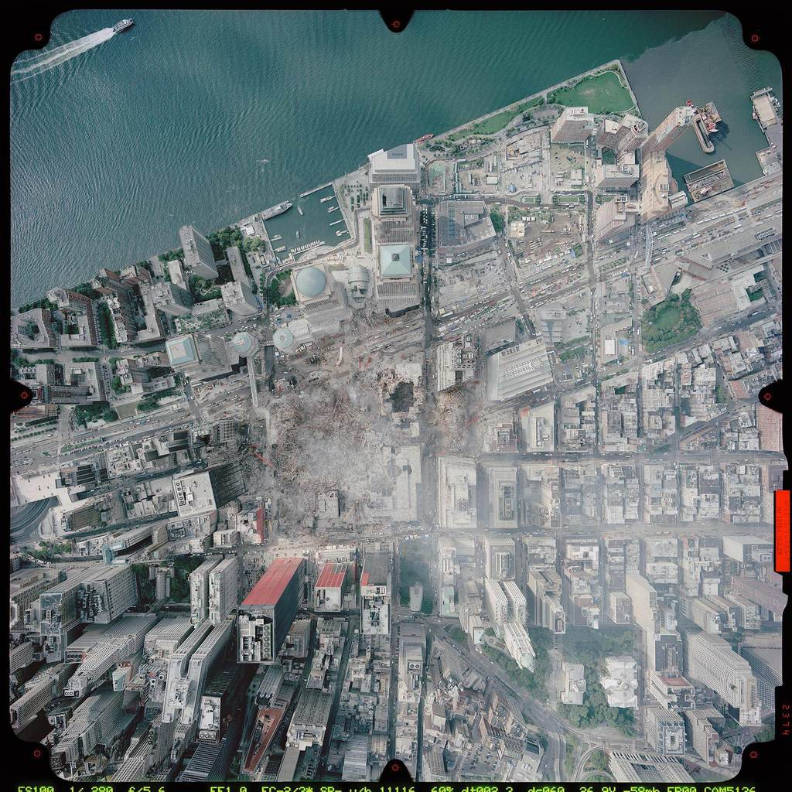 |
|
Figure 54. Every building that was destroyed had a prefix of WTC. There was surprisingly little collateral damage to nearby buildings that were not targeted. The WTC buildings that were not totally destroyed had multiple circular holes visible at Ground Zero -- especially in buildings WTC5 and WTC6. (high-resolution) |
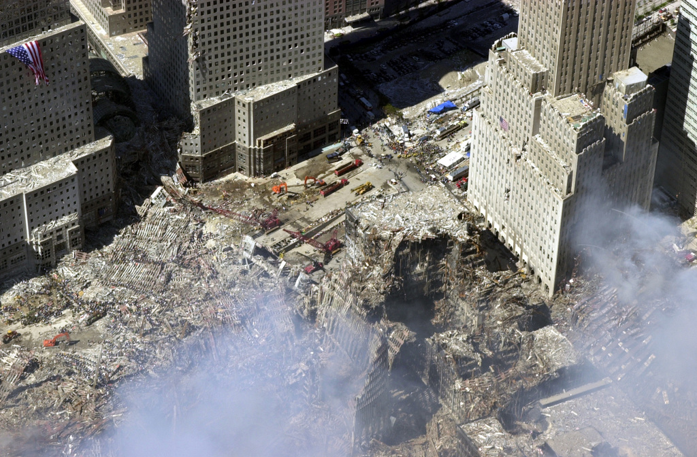 |
|
Figure 55(a). Notice how straight the vertical holes were that cut down through WTC6. |
Figure 55(a) looks west/northwest. Notice the substantial steel debris from the lower floors of WTC1 lying in the West Side Highway. This debris fell short of damaging the WFC2 façade, which only suffered broken windows (see Figure 29). The diagonal path of the steel "wheatchex" in the street look as if they leaned back, jumped out of the bathtub, tried to do a pirouette, and plopped down in the middle of the West Side Highway, almost ready for loading onto trucks. The coherence of this wall from WTC 1 laid out in West street in single thickness suggests that thermite was not used on this wall. Why? Because thermite would have cut steel, sent it tumbling down, creating a scattered trash pile of steel, and likely sending steel beams into adjacent buildings.
The north side of the outer wall of WTC1 is standing unsupported, leaning toward WTC6. The east side of the remaining WTC1 wall appears to be the highest standing section of unsupported wall that remains. A "pancake collapse" would have crushed (destroyed, buckled) these outer walls, yet they remain standing at attention like a soldier. The floors connected to this outer wall seemed to have slipped away as if they had never existed. How could the floors be torn away from the walls, while the walls stay erect, unbuckled, and unsupported? It appears that that the floors were pulverized and simply disappeared. There is debris at the lobby level near the standing walls but there are no floor "pancakes" stacked up.
 |
|
|
Figure 55(b). The remarkable "lay down" of steel wheatchex from the lower stories of WTC1 on West Street (West Side Highway). The WTC3 debris pile is in the background, next to the unsupported WTC2 wall. |
Figure 55(c). The three steel wheatchex stabbed into West Street in the foreground and the remains of WTC3 in the background, in front of the west wall of WTC2. (9/15/01) Source |
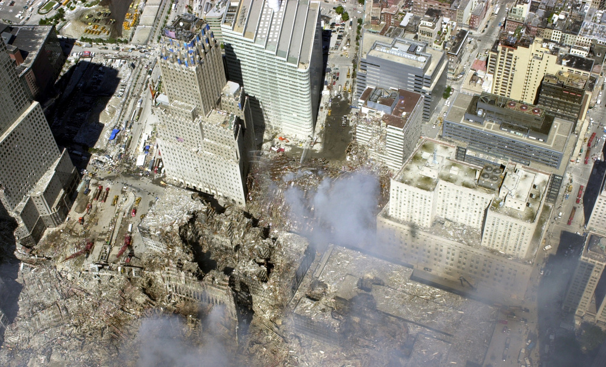 |
|
Figure 56. This photo highlights the depth of the hole in WTC6. The "smoke" or pulverized dust from debris appears to have diminished in comparison to Figure 55(a). While there is abundance of aluminum cladding on the roofs of buildings 5 and 6, there is little or none in the holes. |
Figure 56 shows the remains of WTC6 just north of where WTC1 was standing. The vertical holes in WTC6 (U.S. Customs Building) have the shape of cylindrical core samples in soil. What could have done this? Explosives (dynamite, RDX, etc.)? Thermite? Mini-nukes? Beam weapon? Whatever it was produced vertically straight holes while doing little apparent horizontal damage to the balance of the interior of WTC6. In addition, the parking garage below WTC6 remained essentially undamaged, as Figure 1 on page 1 and Figure 304 below shows.
|
Figure 11. Banker's Trust, a 40-story building, had pulverized dust and some WTC aluminum cladding on its roof -- plus some damage mostly confined to its lower floors. This same pattern prevails in other damaged buildings adjacent to the WTC complex. (See Figure 9, below.) This is surprisingly little damage following destruction of 110-story buildings directly across the street. Why is there no serious damage to the adjacent buildings above the 20th floors of those buildings? Such damage is less than 20% of the height of a Twin Tower. What would explain why this? Disintegration and pulverization into talcum-powder-sized dust above the 20th floors would explain this. |
To Murray and Church Streets Top
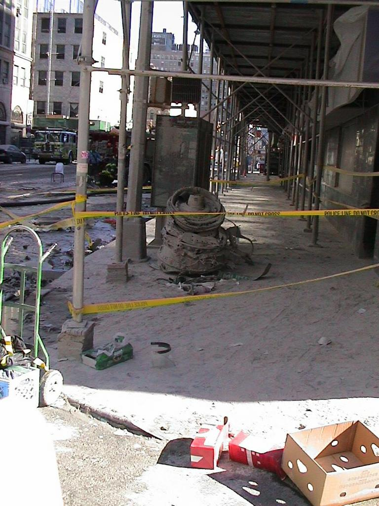 |
|
|
Figure 9(a). WTC5 on the left, the U.S. Postal Service building, and the two buildings to the right (north) of the postal building, have only modest dust and a few pieces of aluminum cladding on their roofs. A jet engine piece was found at the corner of Murray and Church Streets as indicated in Figure 9. (mouseover to remove red arrow) |
Figure 9(b). How could this piece fly through WTC2, over WTC5 and two more buildings, drop into that intersection by clearing the tallest building, land under scaffolding, not gouge the street or any building and not bump into any scaffolding supports? The Flight 175 engine piece apparently came in for a soft landing. (9/??/01) Source |
|
Figure 10. WFC2 had only pulverized dust and WTC aluminum cladding on its roofs. WFC2 suffered only window damage only to its lower floors, despite the destruction of a 1/4-mile high building across the street. |
- Locations Top
 |
 |
|
Figure 59(a).
|
Figure 59(b)
|
| Figure 59(a) maps the WTC area, with each WTC building, some surrounding buildings, and streets labeled. Figure 59(b) is a photograph of the WTC complex and surrounding buildings and streets from the same perspective. | |
 |
|
Figure 57(a). Some debris has been cleared, but the pulverized dust is still emerging. If most of the steel from the upper floors of WTC1 and WTC2 was pulverized, then how much steel was really shipped as scrap to China? Does anyone have these figures or the receipts? |
 |
|
Figure 57(b). A view over the dome of WFC2 shows the damage to WTC6 in the center of the photo. To the left is the collapsed WTC7. Its debris stack is at least five stories high. To the right of WTC6 is the remaining north wall of WTC1 which leans toward WTC6. Where did the wall go? Where did the top 100 floors of the north wall go? They did not fall on WTC6 or WTC7 because there are no steel wheatchex there. Some of the core of WTC1 remains, but where is the rest of the core? The amount of steel on the ground barely covers the ground. |
 |
|
Figure 01. The WTC twin towers towering over the skyscrapers of lower Manhattan.
Source |
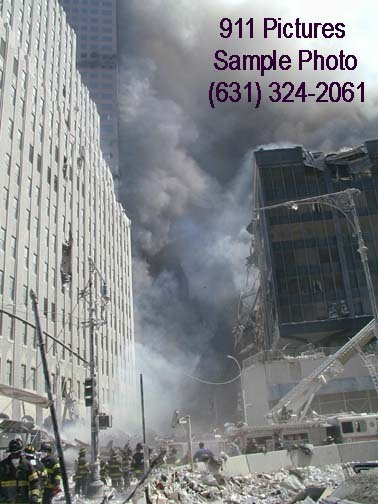 |
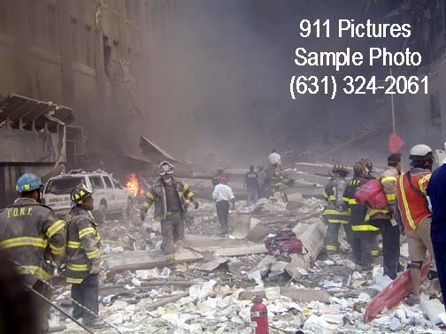 |
|
Figure Vesey1. Looking east on Vesey Street from the West Street intersection after WTC1 was destroyed, the Verizon building is on the left, WTC7 is behind the Verizon building, and WTC6 is on the right. It looks like you could drive down Vesey Street in a four-wheel Jeep. Obviously most of WTC1 didn't fall into Vesey Street.
(9/11/01) Source |
Figure Vesey2. Another view looking east on Vesey Street. The Verizon building on the left suffered minor damage from a piece of WTC1 steel. A Jeep can traverse this debris which is mainly aluminum cladding and paper. Where did WTC1 go?
(9/11/01) Source |
 |
|
| Figure lobby(a). The lobby of WTC1 before 9/11. (9/??/01) Source (Thanks to spooked for this picture.) |
Figure lobby(b). The lobby of WTC1 after 9/11. (9/??/01) Source |
|
|
|
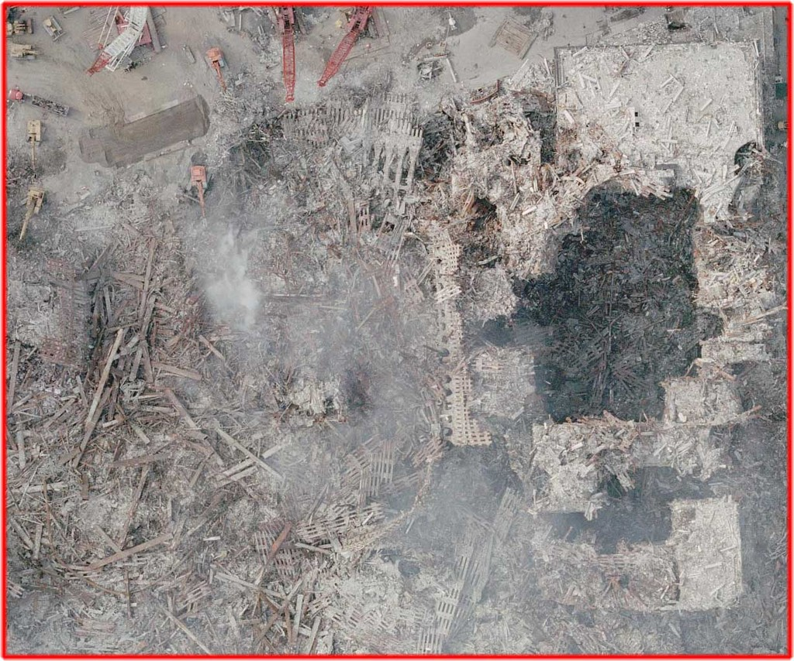 |
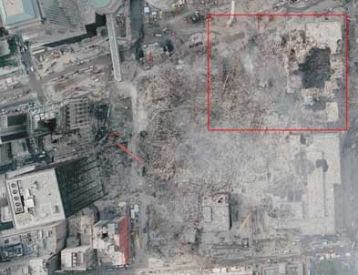 Figure 63(a). Red box outlines the region of Figure 63. |
|
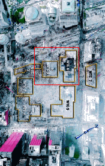 Figure 63(b). Red box outlines the region of Figure 63 and locates WTC buildings. |
||
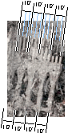 |
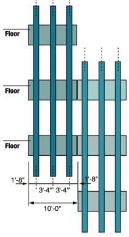 |
|
| Figure 63(c). Left, pitchforks/wheatchex dimensions, right, wheatchex dimensioned in assembled group | ||
| Figure 63. This shows the vertical cut-outs in the center of WTC6. To the left of WTC6 are the remains of WTC1. Note the fairly consistent diameter of the holes. The holes are essentially empty: little debris visible inside the holes. (9/23/01) Source: USGS/NOAA |
You can locate the object above in the large photo (top center, near cranes) and use it as a scale. (click to enlarge) | |
Figure 63 above is an overhead view of WTC6. This photo shows not a single cut-out but a cluster of vertical cut-outs that coalesce together and form a scalloped border. No collapsed floors are visible at the bottom of the hole and the heart of the building is gone. A bomb cannot do this. The debris inside the building is minimal and it all is at ground level, no deeper. The base of the north wall of WTC1 is to the left of WTC6, and you can see the remains of a cluster of core columns in the center of the WTC1 footprint. The debris from WTC1 is almost non-existent, dwarfed by the remains of the 8-story WTC6.
By contrast, look at Figure 59(b) above to see how much taller than WTC1 was than WTC6 before 9/11: 110 vs. 8 floors. WTC6 almost looked like a one-story building prior to 9/11, because it seemed so small in comparison to WTC1.
The vertical cut-outs in WTC6 approximate the shape of circles (viewed from above), each with a diameter of approximately 24-feet, as measured and calculated from the known dimensions of the steel "wheatchex." Where did the core material of the building go? Was it disintegrated and pulverized into a fine dust? If so, then how?
WTC6-inside Top
|
||
|
||
|
Figure 63z. Inside the 8-story WTC6 hole. |
Figure 63z was taken from inside WTC6. The vertical cut-outs seen in Figure 63 do indeed appear to go completely to the ground floor, with relatively little debris remaining. The number of floors within the building can be counted and eight floors are visible (counting floors on the far side, top-down, appears easiest). The evidence suggests that all 8 floors somehow were pulverized or "disappeared." What could be the cause?
WTC5 Top
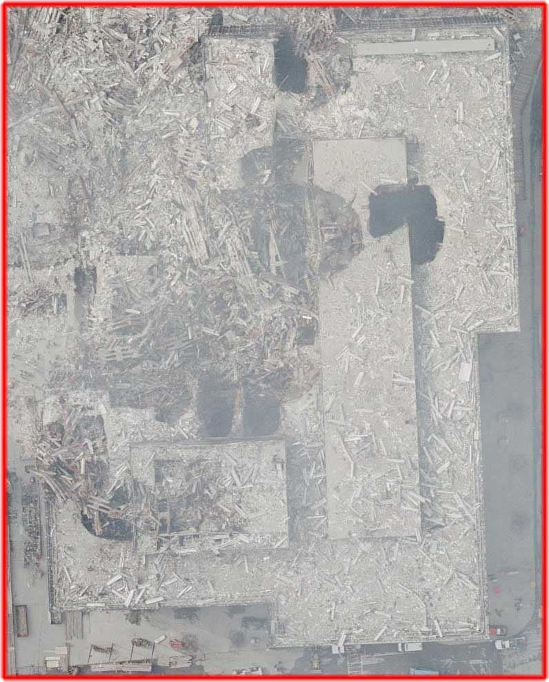 |
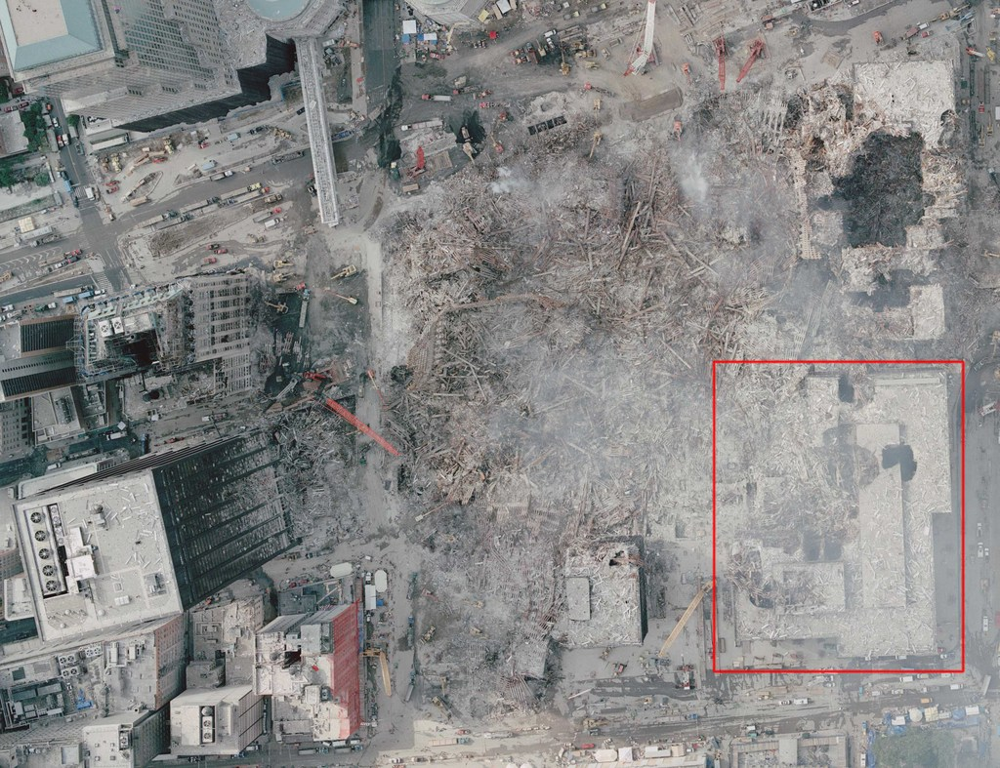 Figure 62(a). Red box outlines the region of Figure 62. |
| Figure 62(b). Red box outlines the region of Figure 62 and locates WTC buildings. | |
|
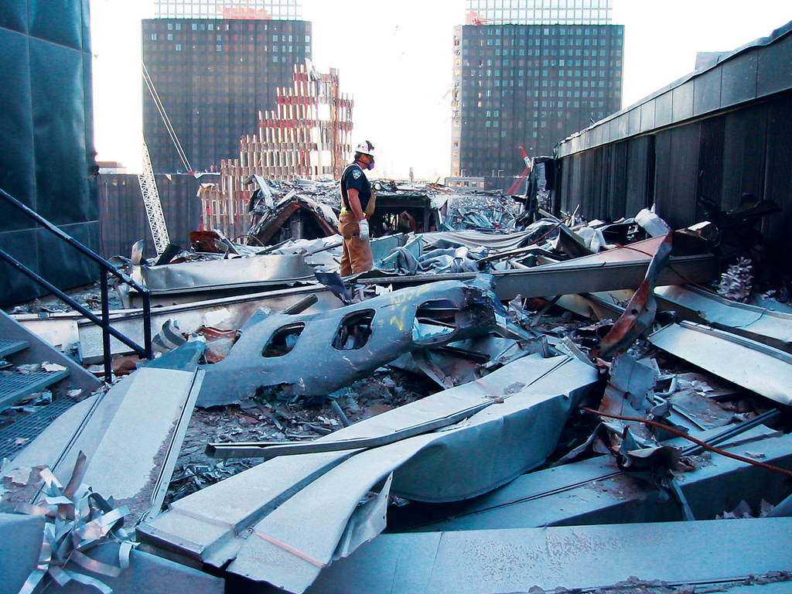 Figure 62(c). Fuselage part atop WTC5 Photograph by Gene Corley (10/25/01) Source: more info: |
|
|
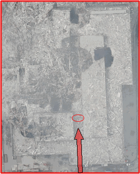 Figure 62(c). Alleged location of fuselage part. |
|
| Figure 62. A close-up of WTC5 and its mysterious holes, shortly after the event. (9/23/01) Source: USGS/NOAA |
Figure 62 shows the roof of WTC5, with considerable aluminum and some steel wheatchex on the left (south) and top (west). What could cause these holes? WTC5 is not adjacent to a Twin Tower, as WTC4 and WTC6 were. Thus WTC5 was less likely to suffer damage from the destruction of a Twin Tower than WTC4 and WTC6 were, as shown by Figure 75 on page 6. A piece of aircraft fuselage was allegedly found on the roof of WTC5. Can you find the fuselage piece in Figure 62? If not, you're not alone. When did a fuselage piece shown in Figure 62(c) arrive on the roof of WTC5?
The fuselage piece in Figure 62(d) made popular by Popular Mechanics is located between the two raised roof sections of WTC5. This location in the large picture is identified by a circle and arrow in the small photo, Figure 62(d). There is only one aircraft item, the rest is aluminum cladding and other building debris.WTC4 Top
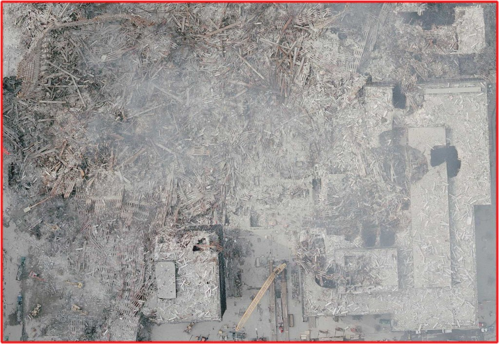 |
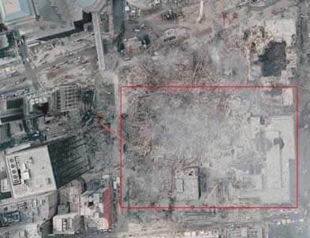 Figure 61(a). Red box outlines the region of Figure 61. |
| Figure 61(b). Red box outlines the region of Figure 61 and locates WTC buildings. | |
| Figure 61. The remains of WTC4, a 9-story building, are at the lower left and the remains of WTC5, a 9-story building, are on the right. The main part of building 4, a 9-story building, virtually disappeared, leaving the north wing standing. (9/23/01) Source: USGS/NOAA |
|
|
| Figure 61(c). The north wing of WTC4, as viewed from Church Streed, looking west, appears surgically removed from the main body of WTC4, which has essentially dissappeared. If WTC2 fell on it and squashed the main building, where is the part of WTC2 that did this? |

 |
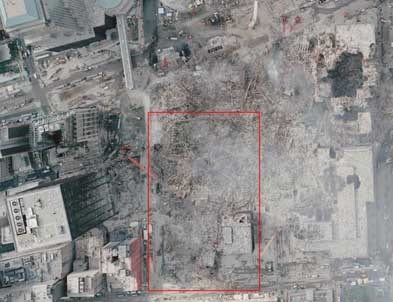 Figure 60(a). Red box outlines the region of Figure 60. |
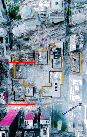 Figure 60(b). Red box outlines the region of Figure 60 and locates WTC buildings. |
|
 Figure 60(c). Yellow box locates north wing of WTC4. Figure 60(c). Yellow box locates north wing of WTC4. |
|
 Figure 60(d). Yellow box locates hole in Liberty Street by WTC2. |
|
| Figure 60. WTC4 footprint at the bottom, the remaining WTC4 north wing on the right, and the WTC2 footprint above. (9/23/01) Source: USGS/NOAA |
- Going underground Top

Figure 302(a). Solid red box locates Figure 302.
|
|
Figure 302(b). Figure 302 is located in zone 2, above. Overhanging debris was removed before ladder was lowered into hole 2.
|
|
|
Figure 302. Ground Zero workers near a stepladder in hole 2 in Liberty |
In Figure 302 there is some strange "toasted" steel. The worker by the ladder stares down at several pieces of discolored steel beams, and may be saying, "What the h**l is this?" There is a long red beam that rises from the lower-right corner that looks wavy like a serpent. Before the steel disintegrates, does it crinkle, become wavy, or shrivel? Near the tip of the "serpent" described above, there is a vertical piece of material that has a gold-copper appearance. Below the ladder, there are two similar gold pieces that are highly reflective. The WTC2 shows a strange pattern where the lower portion of a steel column is missing, but not its upper portion. Was gravity acting up at that point? In the background, behind the ladder, you can see a section of intact sidewalk with almost no debris on it. This is at the base of the 110-story South Tower, yet the sidewalk was not crushed by falling debris.
Now we're going below ground level so let's review what we've been told:
- We were shown WTC7 collapsing in 6.6 seconds and it looked like a conventional controlled demolition (CD).
- Then WTC landlord Larry Silverstein dropped an even bigger hint about WTC7 having been "pulled," oddly enough by FDNY, just in case we missed it.
- Then we were told about "raging fires" that melted steel, then that the "raging fires" merely weakened the steel enough to cause a "progressive collapse."
- We were also told that much of the steel went to China, so we should pine for data we don't have instead of looking at the data we do have.
- More recently we were told about molten metal pouring out of a window, a story for which there are no eyewitnesses (yet).
- And we no longer hear that all three buildings "fell down" but that all three buildings "collapsed" in free-fall time.
- After our credulity has been strained beyond all limits, why should we believe that there were pools or even "ponds" of molten metal in the basements? Where is the evidence?
Rising dust and vapor from zones in the rubble continued for weeks. This phenomenon needed an explanation. Pools of molten metal provided a plausible explanation, but is it a correct explanation?
Hole #2 Top
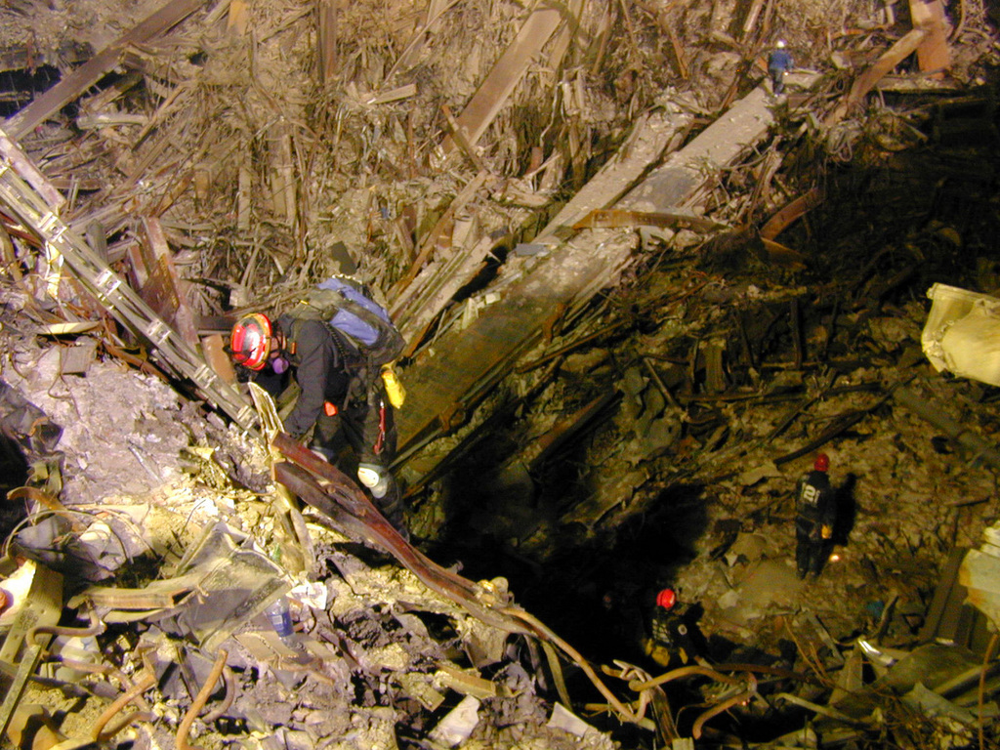 |
Figure 300(a). Solid red box locates Figure 300.
|
Figure 300(b). Figure 300 is located in zone 2, above. Overhanging debris was removed before ladder was lowered into hole 2.
|
|
|
Figure 300. GZ workers descend into the subbasements below WTC2. While there is extensive damage, there is little building debris at the bottom of the hole. There is no sign of molten metal. A worker in the distance walks along a massive core column. |
Figure 300 looks down into the basement of WTC2 in zone 2 in shown in Figure 300(b). This is adjacent to the southeast corner of the bathtub wall which was damaged at the top. There seems to be a wet floor or puddle of water. There is no steam rising. There clearly is no molten metal visible in this section of the basement.
Hole #1 Top
|
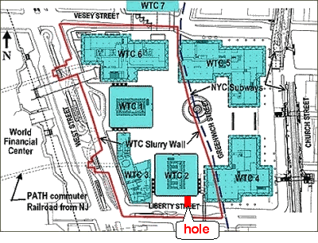 Figure 303(a). Solid red box locates Figure 300. |
|
|
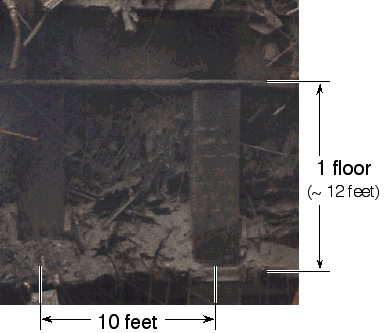 Figure 303(b). Spacing of columns underground and approximate floor height. |
|
|
Figure 303(c). Figure 303 is located in zone 1, above. Overhanging debris was removed before ladder was lowered into hole 1. |
|
|
Figure 303. This hole adjacent to WTC2 (zone 2 in Figure 303(c)) is through sidewalk and pavement. This hole contains more debris than the hole discussed in Figure 300 above. It looks as if the debris fell in the hole. Note the scale, shown to the right. |
Figure 303 shows a hole outside the wall of WTC2 closest to Liberty street and exhibits a number of anomalous effects. One example is the missing lower portion of that beam on the right end. The three outer columns in the center of the picture have a strange flanged appearance as if they had unfolded, and they look cooked. It looks as if a steel wheatchex dove into the hole. The fact that you can only see the tip of the wheatchex shows how far down the hole goes.
The WTC2 columns are "pitch fork handles" at the lobby level, spaced on 10-foot centers. A six-foot person could lay between the columns with his feet against one column and reach out and almost touch the adjacent column. Large cars and trucks can fit between these columns. Therefore the column unwrapping effect is huge. Similar to figure 302, there are "serpent-like" steel beam remnants hanging over the hole. They look as though they stopped short of complete disintegration. The metal in the lower right corner of the picture, with a camouflage appearance, looks deformed and dissolved as if attacked by acid. There is a large amount of material distributed throughout that looks as if it were run through a paper shredder. In the lower levels, concrete rebar is exposed apparently because the concrete attached to it was pulverized.
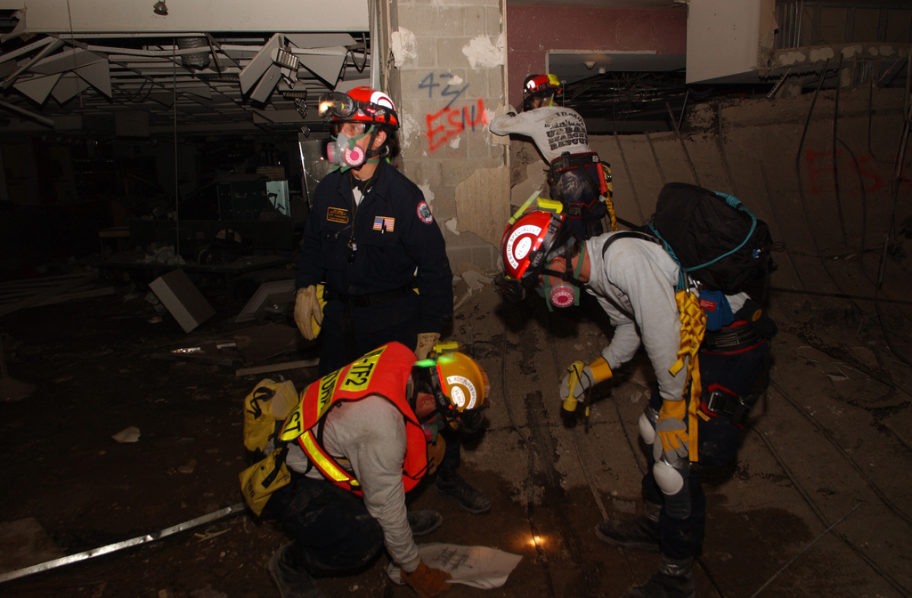 |
| Figure 311. "Hmmm...where do we start looking?" GZ workers begin to search in the mall in first subbasement level. (photo filed 9/19/01) Source |
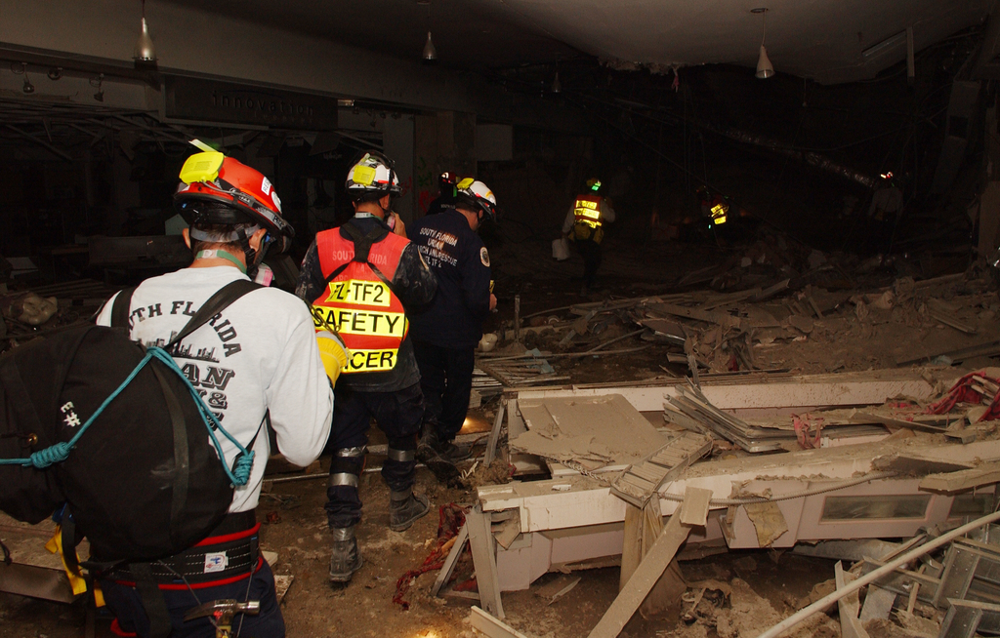 |
|
Figure 312. "OK, here we go. Let's just start looking." This photo was taken inside the mall. The store sign "innovation" is visible on the left.
(photo filed 9/19/01) Source |
The GZ workers in Figures 311 and 312 are not crawling on their hands and knees through dense debris in ruined subbasements. They are walking upright and not ducking beneath low-hanging ceilings. Does this look like a 1/4-mile tall tower crash-landed or pancake-collapsed into the basement? The lower portion of the steel from the east wall of WTC2, shown in Figure 60, is spread over the ground where the main section of WTC4 once stood. The mall is the first floor below all this steel, yet the mall was not crushed.
 |
|
Figure 304. Why are they still hosing down the "pile" in March 2002? There appears to be smoke, dust, or vapor rising from the pile. Why? The light streaks across the photo appear to be reflections off the window of the photographer's aircraft. |
 |
 |
|
Figure 309. The southeast corner of big bathtub is in the background. Why are they hosing down the pile? A reader suggests that policemen are waiting to do forensic investigation. (photo filed 3/15/02) Source |
Figure 308. The southeast corner of the big bathtub again. Dust or smoke rises from the pile. The workers are wearing respirators, not simple dust masks, six months after 9/11. The dust or haze is very fine and does not settle out like regular dust would behind a vehicle on a dirt road. The policemen apparently are sifting through debris, looking for body parts |
Hot Spot? Top
It has been widely reported that molten metal burned at Ground Zero (GZ) for up to 99 days despite continuous water poured on them and numerous rain storms. Supposedly, this is a smoking gun for controlled demolition. But, are these stories true?
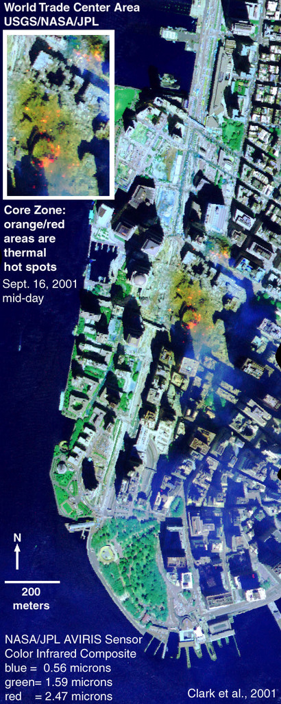 |
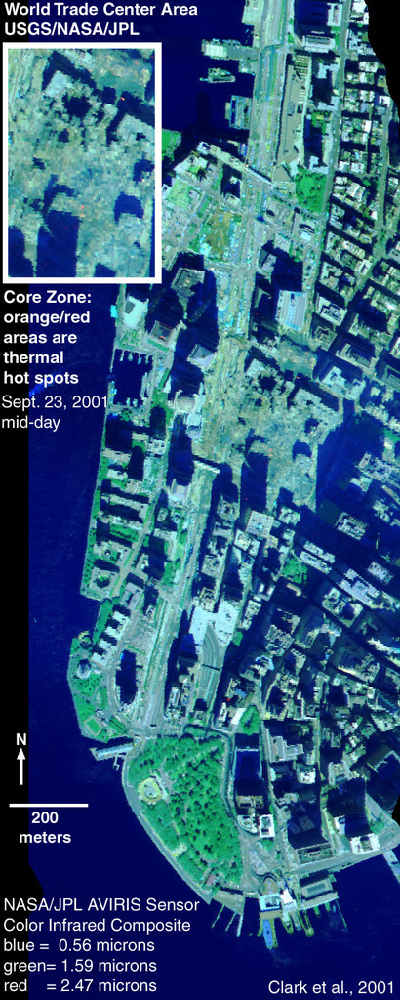 |
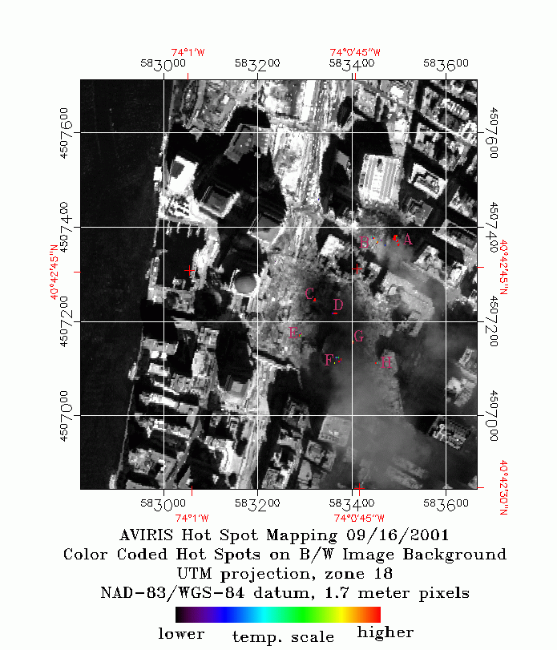 |
| Figure Heat(a). The official government image of thermal hot spots at Ground Zero five days after the "attacks." (9/16/01) Source and here |
Figure Heat(b). The official government image of thermal hot spots at Ground Zero 12 days after the event. (9/23/01) Source and here |
Figure Heat(c). The hot spots are labeled A through G at Ground Zero five days after the "attacks." (9/16/01) Source |
 |
 |
|
| Figure Thermal(a). Thermal map excerpt taken September 16, 2001. Zone F was the largest hot spot. (9/16/01) Source and here |
Figure Thermal(b). Thermal map excerpt taken September 23, 2001. (9/23/01) Source and here |
Figure Thermal(c). Solid red box locates the F hole shown in Figure Thermal (a) and (b). This is the same location shown in Figure 302 and 300. Source and here |
Figure Thermal (a) shows thermal imaging of WTC on September 16, 2001, and F is the largest hot spot. We understand that the raw data came from NASA and then these images were produced by USGS using the NASA data. How reliable are these data? Assume the data are valid for the sake of argument. Figure Thermal(b), September 23, 2001, shows no large hot spots anywhere, casting doubt on the stories of long-lived molten metal. So, if the imaging data are reliable, then the hot spots disappeared within two weeks, not 99 days. But there are reasons to suspect that the imaging data are false. A spot like F would seem to be the most likely location to find molten metal, yet this spot coincides with hole 2 as shown in Figure 300 above, where we found no evidence of molten metal. Instead it appears to be a damp basement.
There are other reasons to doubt the stories of "pools of molten metal." First, the stories of molten metal come from interested parties like the head of Tully Construction and Controlled Demolition, Inc. Second, there are no photos of molten metal that we believe are reliable. Third, there are no photos of the solidified molten metal after it cooled either in place or being carried out. There's no evidence of molten metal before, during, or after. Fourth, the molten metal may be a cover story to hide the grim truth. Vehicle dust kicked up on a dirt road does not take six months to settle out. Dust from traditional controlled demolition settles out quickly, even after being jack-hammered and pushed around. But the dust at the WTC was so ultra-fine that hosing it down would have been a wise thing to do. It is quite possible that GZ workers were not hosing down molten metal but were hosing down ultra-fine dust and the fumes of molecular dissociation. (See this figure.)
Continue to next page.
(smiley source) (smiley source)
| Top | homepage | Why Indeed | Billiard Balls |
|
|
|